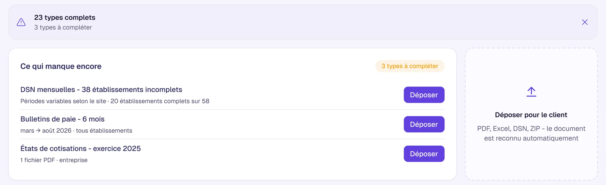

Décision 01 sur 06
Voir ce qui manque dès la réception
Chaque dépôt est contrôlé à l'arrivée : bon format, bonne période, mois manquants. Une vue par établissement et par mois montre les trous d'un coup d'œil.
ÉcartéOuvrir les fichiers un par un pour vérifier.
« En vert j'ai la DSN, en rouge je ne l'ai pas. »

1 2- 1La liste de ce qui manque, à jour à chaque dépôt.
- 2Le fichier est contrôlé à l'arrivée : format, période, établissement.
Extrait de maquette, données fictives. Faites glisser pour voir la suite.